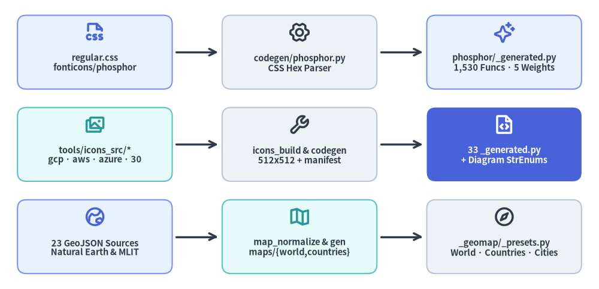
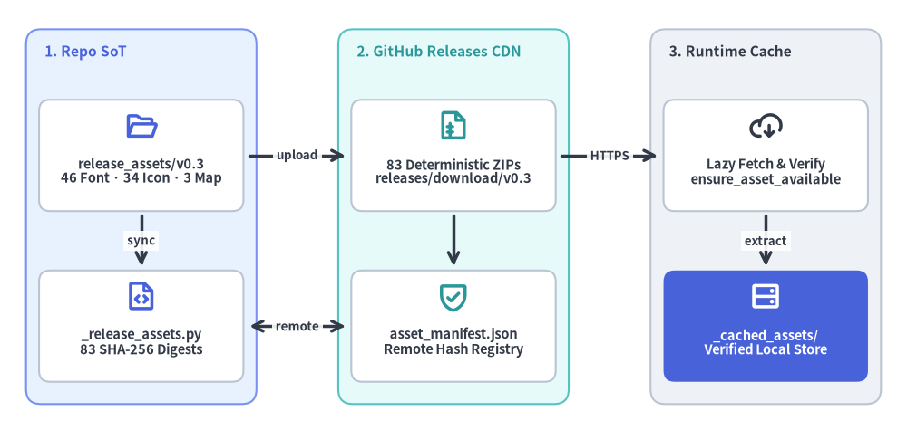

Developer Tooling: Code Generation & Release Assets
Drawlib exposes thousands of vector glyph icons, 33 cloud and technology architecture icon suites, and 232 normalized geographic boundary maps without bloating its PyPI wheel—combining automated Python code generation (./dcli codegen) with deterministic .zip asset distribution (./dcli release-assets).

Source Code
from drawlib.canvas import save, setup
from drawlib.diagrams.architecture import ArchitectureDiagram, Node, PhosphorIcon
from drawlib.styles import Styles
setup(width=120, height=58)
d = ArchitectureDiagram(
node_style=Styles.PrimaryBold,
node_text_style=Styles.DarkBold.patch(text_size=10.5),
edge_style=Styles.DarkBold,
edge_text_style=Styles.Dark.patch(text_size=9.8),
node_card_style=Styles.Neutral.patch(shape_r=1.8),
)
# Pipeline 1 (Top): Phosphor Vector Font Icons
p1_src = d.add(
Node(
"regular.css\nfonticons/phosphor",
width=31.0,
height=14.8,
icon=PhosphorIcon.FILE_CSS,
icon_size=4.4,
card_style=Styles.PrimaryNeutral.patch(shape_r=1.8),
),
xy=(15.5, 44.5),
)
p1_gen = d.add(
Node(
"codegen/phosphor.py\nCSS Hex Parser",
width=31.0,
height=14.8,
icon=PhosphorIcon.GEAR_SIX,
icon_size=4.4,
style=Styles.DarkBold,
),
xy=(56.5, 44.5),
)
p1_out = d.add(
Node(
"phosphor/_generated.py\n1,530 Funcs · 5 Weights",
width=31.0,
height=14.8,
icon=PhosphorIcon.SPARKLE,
icon_size=4.4,
card_style=Styles.PrimaryNeutral.patch(shape_r=1.8),
),
xy=(97.5, 44.5),
)
# Pipeline 2 (Middle): 33 PNG Architecture & Domain Icon Suites
p2_src = d.add(
Node(
"tools/icons_src/*\ngcp · aws · azure · 30",
width=31.0,
height=14.8,
icon=PhosphorIcon.IMAGES,
icon_size=4.4,
style=Styles.SecondaryBold,
card_style=Styles.SecondaryNeutral.patch(shape_r=1.8),
),
xy=(15.5, 26.0),
)
p2_gen = d.add(
Node(
"icons_build & codegen\n512x512 + manifest",
width=31.0,
height=14.8,
icon=PhosphorIcon.WRENCH,
icon_size=4.4,
style=Styles.DarkBold,
),
xy=(56.5, 26.0),
)
p2_out = d.add(
Node(
"33 _generated.py\n+ Diagram StrEnums",
width=31.0,
height=14.8,
icon=PhosphorIcon.FILE_CODE,
icon_size=4.4,
style=Styles.WhiteBold,
text_style=Styles.WhiteBold.patch(text_size=10.5),
card_style=Styles.PrimaryFlat.patch(shape_r=1.8),
),
xy=(97.5, 26.0),
)
# Pipeline 3 (Bottom): GeoMap Vector Presets
p3_src = d.add(
Node(
"23 GeoJSON Sources\nNatural Earth & MLIT",
width=31.0,
height=14.8,
icon=PhosphorIcon.GLOBE_HEMISPHERE_EAST,
icon_size=4.4,
card_style=Styles.PrimaryNeutral.patch(shape_r=1.8),
),
xy=(15.5, 7.5),
)
p3_gen = d.add(
Node(
"map_normalize & gen\nmaps/{world,countries}",
width=31.0,
height=14.8,
icon=PhosphorIcon.MAP_TRIFOLD,
icon_size=4.4,
style=Styles.SecondaryBold,
card_style=Styles.SecondaryNeutral.patch(shape_r=1.8),
),
xy=(56.5, 7.5),
)
p3_out = d.add(
Node(
"_geomap/_presets.py\nWorld · Countries · Cities",
width=31.0,
height=14.8,
icon=PhosphorIcon.COMPASS,
icon_size=4.4,
style=Styles.DarkBold,
),
xy=(97.5, 7.5),
)
d.connect(p1_src, p1_gen, padding=0.8)
d.connect(p1_gen, p1_out, padding=0.8)
d.connect(p2_src, p2_gen, padding=0.8)
d.connect(p2_gen, p2_out, padding=0.8)
d.connect(p3_src, p3_gen, padding=0.8)
d.connect(p3_gen, p3_out, padding=0.8)
d.draw(xy=(3.5, 3.0))
save()
1. Concept: Generated Type-Safe Facades Over External Asset Packs
Hand-maintaining thousands of icon functions, diagram enums, and geographic bounding-box presets invites typo drift and stale signatures whenever upstream catalogs evolve. Instead, Drawlib treats all icon and map bindings as deterministic generated artifacts backed by 35 subcommands under ./dcli codegen:
- Zero Runtime Schema Overhead: CSS codepoints, PNG variant manifests, and GeoJSON bounding boxes are parsed at codegen time into static Python functions and
StrEnums with full IDE autocompletion. - Explicit Keyword-Only Styling: Every generated icon function enforces
style: Styleas a required keyword-only argument, guaranteeing explicit color/weight control across both vector font glyphs and rasterized cloud icons:
from drawlib.icons import gcp, phosphor
from drawlib.styles import Styles
phosphor.database((50, 50), width=10, style=Styles.Dark)
gcp.compute_engine((20, 20), width=12, style=Styles.Primary, variant="default")
gcp.compute_engine((40, 20), width=12, style=Styles.Primary, variant="modern")
2. Positioning: The Decoupled Three-Tier Release Architecture
To keep pip install drawlib fast and PyPI wheels under 2 MB while offering hundreds of megabytes of international fonts, cloud icons, and high-resolution maps, Drawlib decouples code distribution from binary asset hosting across three tiers:

Source Code
from drawlib.canvas import save, setup
from drawlib.diagrams.architecture import ArchitectureDiagram, Node, NodeGroup, PhosphorIcon
from drawlib.styles import Colors, Styles
setup(width=122, height=58)
d = ArchitectureDiagram(
node_style=Styles.PrimaryBold,
node_text_style=Styles.DarkBold.patch(text_size=10.5),
edge_style=Styles.DarkBold,
edge_text_style=Styles.DarkBold.patch(text_size=9.6),
node_card_style=Styles.Neutral.patch(shape_fill_color=Colors.White, shape_r=1.5),
)
# Tier 1: Repository Single Source of Truth
g1 = d.add(
NodeGroup(
title="1. Repo SoT",
width=31.0,
height=50.5,
style=Styles.PrimaryNeutral.patch(shape_r=2.0),
text_style=Styles.PrimaryBold.patch(text_size=11.2, halign="left", valign="top"),
),
xy=(0.0, 0.0),
)
n1a = g1.add(
Node(
"release_assets/v0.3\n46 Font · 34 Icon · 3 Map",
width=27.5,
height=15.0,
icon=PhosphorIcon.FOLDER_OPEN,
icon_size=4.4,
),
xy=(15.5, 33.5),
)
n1b = g1.add(
Node(
"_release_assets.py\n83 SHA-256 Digests",
width=27.5,
height=15.0,
icon=PhosphorIcon.FILE_CODE,
icon_size=4.4,
),
xy=(15.5, 10.5),
)
# Tier 2: GitHub Releases Public CDN
g2 = d.add(
NodeGroup(
title="2. GitHub Releases CDN",
width=31.0,
height=50.5,
style=Styles.SecondaryNeutral.patch(shape_r=2.0),
text_style=Styles.SecondaryBold.patch(text_size=11.2, halign="left", valign="top"),
),
xy=(42.0, 0.0),
)
n2a = g2.add(
Node(
"83 Deterministic ZIPs\nreleases/download/v0.3",
width=27.5,
height=15.0,
icon=PhosphorIcon.FILE_ARCHIVE,
icon_size=4.4,
style=Styles.SecondaryBold,
),
xy=(15.5, 33.5),
)
n2b = g2.add(
Node(
"asset_manifest.json\nRemote Hash Registry",
width=27.5,
height=15.0,
icon=PhosphorIcon.SHIELD_CHECK,
icon_size=4.4,
style=Styles.SecondaryBold,
),
xy=(15.5, 10.5),
)
# Tier 3: Runtime Lazy Cache
g3 = d.add(
NodeGroup(
title="3. Runtime Cache",
width=31.0,
height=50.5,
style=Styles.Neutral.patch(shape_r=2.0),
text_style=Styles.DarkBold.patch(text_size=11.2, halign="left", valign="top"),
),
xy=(84.0, 0.0),
)
n3a = g3.add(
Node(
"Lazy Fetch & Verify\nensure_asset_available",
width=27.5,
height=15.0,
icon=PhosphorIcon.CLOUD_ARROW_DOWN,
icon_size=4.4,
style=Styles.DarkBold,
),
xy=(15.5, 33.5),
)
n3b = g3.add(
Node(
"_cached_assets/\nVerified Local Store",
width=27.5,
height=15.0,
icon=PhosphorIcon.HARD_DRIVES,
icon_size=4.4,
style=Styles.WhiteBold,
text_style=Styles.WhiteBold.patch(text_size=10.5),
card_style=Styles.PrimaryFlat.patch(shape_r=1.5),
),
xy=(15.5, 10.5),
)
# Intra-tier and cross-tier edges
d.connect(n1a, n1b, label="sync", padding=0.6)
d.connect(n2a, n2b, padding=0.6)
d.connect(n3a, n3b, label="extract", padding=0.6)
d.connect(n1a, n2a, label="upload", padding=0.8)
d.connect(n2a, n3a, label="HTTPS", padding=0.8)
d.connect(n1b, n2b, label="remote", arrow="<->", padding=0.8)
d.draw(xy=(3.5, 3.5))
save()
3. Details: The Three Codegen Pipelines & 83-Package Asset Lifecycle
3.1. Pipeline 1 — Phosphor Vector Font Icons (./dcli codegen icon-phosphor)
Implemented in tools/dcli/codegen/phosphor.py, the Phosphor generator maps CSS glyph declarations directly to TrueType font codepoints:
- CSS Codepoint Parsing: Reads
tools/release_assets/v0.3/fonticons/phosphor/regular.css(or downloadsicon_phosphorfrom GitHub Releases if absent locally) and parses.ph.<icon-name>:beforerules into hex Unicode codepoints. - Five Font Weights: Phosphor is packaged across 5 single-glyph TrueType weights (
thin,light,regular,bold, andfill, selected viastyle.icon_style). - Centralized Runtime Validation: Emits 1,530
snake_casefunctions intosrc/drawlib/_icons/font_icons/phosphor/_generated.py. Each wrapper delegates to_write = PHOSPHOR_PROVIDER.write, keeping@validate_callcentralized once onFontIconProvider.write()insrc/drawlib/_icons/font_icons/_base.pyso module import remains instantaneous.
3.2. Pipeline 2 — 33 PNG Cloud & Domain Icon Suites (icon-gcp, icon-aws, icon-azure, icon-*)
Implemented across tools/dcli/codegen/icons_build.py, gcp_codegen.py, and original_cloud_codegen.py, this pipeline manages 33 rasterized icon suites:
- Cloud Providers:
gcp(250 canonical functions across 295defaultandmodernPNGs),aws(329 icons),azure(250 icons), andcloud(45 multi-cloud/PaaS logos). - 14 Additional Technology Domains:
ai,business,client,cnative,code,data,devops,facility,itservice,network,security,server,social, andworkspace. - 15 Vendor-Neutral Pastel Suites (
original_*):original_aithroughoriginal_workspace(80 Drawlib-authored concept icons per suite).
For each suite, the pipeline:
- Renders and normalizes native Drawlib scripts in
tools/icons_src/<suite>/*.py(viatools/icons_src/build.shwhen--build-imagesis passed) into512×512(460×460inner bounding box) transparent PNGs and writestools/release_assets/v0.3/icons/<suite>/manifest.json. - Emits typed Python functions (including
variant: Literal[...]unions) intosrc/drawlib/_icons/png_icons/<suite>/_generated.pyand formats withruff format. - Synchronizes the corresponding architecture diagram
Enumclass (GcpIcon,AwsIcon,AzureIcon,AiIcon..WorkspaceIcon,OriginalAiIcon..OriginalWorkspaceIcon) insidesrc/drawlib/_diagrams/architecture/_icons.pyvia_update_architecture_enum().
3.3. Pipeline 3 — GeoMap Vector Boundary Presets (./dcli codegen map)
Implemented across map_download.py, map_normalize.py, and map_codegen.py, the map pipeline compiles pure-Python cartographic datasets for drawlib.smartarts.GeoMap:
- Upstream Fetch (
map_download.py): Downloads 23 upstream datasets—Natural Earth110m/50m/10mAdmin-0/Admin-1 boundaries, Japan MLIT prefectural and municipal GeoJSONs/CSVs, and 12 global metropolitan ward/borough GeoJSONs—intotools/original_assets/maps/. - Topology Normalization (
map_normalize.py): Simplifies polygon rings and writes 232 normalized.geojsonfiles plusmanifest.jsonundertools/release_assets/v0.3/maps/{world,countries,cities}/. - Preset Codegen (
map_codegen.py): Readsmaps/manifest.jsonand generatesWorld,Countries, andCitiesStrEnums alongsidePRESET_DEFAULT_RANGES((lon_range, lat_range)tuples) insrc/drawlib/_smartarts/_geomap/_presets.py.
3.4. Deterministic .zip Packaging & Release Asset Commands (./dcli release-assets)
src/drawlib/_release_assets.py acts as the top-level Single Source of Truth (SoT) defining 83 deterministic .zip packages under DEFAULT_RELEASE_TAG = "v0.3":
- 46
font_*packages (Roboto, Sans/Serif/Mono families, Japanese, CJK, Korean, Arabic, Brahmic, and Thai Noto fonts) - 34
icon_*packages (icon_phosphor+ 33 PNG icon suites) - 3
map_*packages (map_world,map_countries,map_cities)
create_deterministic_zip_bytes() sorts archive entries lexicographically, pins ZIP timestamps to 2026-01-01 00:00:00, and normalizes file modes to 0o644 so identical inputs produce bit-identical .zip bytes and SHA-256 digests on Linux, macOS, and Windows. Each ./dcli release-assets subcommand serves a distinct role:
./dcli release-assets sync [--check]: 100% local and offline. Scanstools/release_assets/<tag>/, computes deterministic in-memory ZIP SHA-256 hashes, and updates (or verifies with--check)src/drawlib/_release_assets.pywithout making network calls../dcli release-assets build [PACKAGE]: Writes deterministic.ziparchives locally intodist/release_assets/<tag>/without uploading../dcli release-assets remote: Queries the GitHub Releases REST API and audits remote GitHub Release assets andasset_manifest.jsonSHA-256 checksums against local_release_assets.pydefinitions../dcli release-assets upload/remove: Uploads (skipping packages whose remote SHA-256 already matches unless--forceis passed) or deletes.zipassets on GitHub Releases and updates the remoteasset_manifest.json.
3.5. Runtime Lazy Resolution & Air-Gapped Pre-Warming
At runtime, ensure_asset_available() and download_if_not_exist() resolve missing assets lazily into drawlib._cached_assets/:
- Checks whether the target font, icon, or GeoJSON file already exists locally (and matches its expected MD5/package manifest).
- If absent, downloads
https://github.com/yuichi110/drawlib/releases/download/{tag}/{archive_name}viaurllib.request, verifies the archive's SHA-256 digest againstRELEASE_ASSET_PACKAGESin_release_assets.py(raisingRuntimeErroron mismatch), and extracts intodrawlib._cached_assets/. - For air-gapped servers, CI runners, and
drawlib:assets/drawlib:fullDocker images,drawlib cache download --all(download_all_release_assets()) pre-fetches and verifies all 83 packages upfront.
Next, examine the PyPI publishing workflow and clean-room Docker verification in Publishing & Docker.